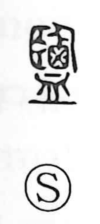

演

Uncategorized
Kun: | On: en
to perform ・ to act ・ to play ・ to extend ・ to carry through
Explanation
A phono-semantic character that takes 寅 as its phonetic core. Shirakawa explains 寅 as the image of hands set to either side of a bent arrow, straightening it so it shoots true; from this image arise senses such as extending, carrying something through, and spreading or amplifying. On that foundation, the character develops meanings like carrying out or performing, and by extension acting and play. It stands close in sense to 延 (“to extend”) and 引 (“to pull”).